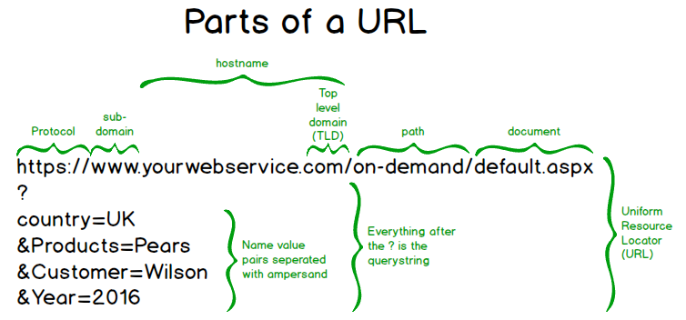

Browsers / Servers / HTTP
- Two key pieces
- Web browser: Program used to request and display information
- Web server: Program used to provide information
- These programs usually run on different machines.
- Crash course in Networking
- Streams: A conceptual “stream” of data.
- Imagine golf balls being pushed through a pipe with either bits or digits written on them.
- Or a ticker tape
- Streams appear in many programming languages, including Java.
System.outin Java is a stream typically connected to the console (screen).- Bytes pushed into the stream by methods like
printlnare pulled out and displayed on the screen.
- Bytes pushed into the stream by methods like
System.inis a stream typically connected to the keyboard. Data pulled out used as input to the program.- Streams (both input and output) can be attached to files. (That’s how we read and write to files.)
- Streams called “pipes” can connect different processes.
- Can even attache streams to
Strings orbytearrays. - In many languages, streams provide a common interface so that methods can take a generic Stream object as a
parameter and be written agnostic of the source/destination of the data.
- In other words, the method need not know whether the data is coming from the keyboard or a file.
- Streams can carry text data, binary data, or both (although buffering can make handling both at the same time tricky).
- A connection between programs running on different machines is called a “socket”.
- Sockets are objects typically created by the operating system.
- In Java, a Socket object contains methods that return input and output stream objects.
- These stream objects returned by sockets is how data is sent between programs (in particular, web browsers and web servers)
- Imagine you ask your assistant “Connect me to the White House”. A few minutes later she brings you a cell phone, and you begin a conversation. You don’t really know for sure how she connected you, all that matters is that you now have an object that allows you to communicate.
- Each computer connected to the Internet is assigned a unique number called an “IP address”.
- However, we humans find names easier to remember than numbers.
- Therefore, we use DNS (Domain Name System) to map names like
www.google.comto IP addresses. - A computer can run more than one program that may want to use a socket. Therefore, port numbers are used to
direct incoming requests to the correct program.
- A port number is analogous to to a telephone extension.
- Streams: A conceptual “stream” of data.
URL
- URL is what you type into a browser to specify what information you want.
- What does URL stand for? Uniform Resource Locator
- Key parts: 
- Protocol: “Language” the client will speak to the server
- Most browsers can also handle other protocols like FTP.
- When a browser connects to
ftp://foo.comit is talking to an FTP server, which means it needs to generate its requests differently (e.g., “Speak” Dutch instead of English)
- Hostname: The human-readable name of the machine hosting the web server.
- Your computer’s networking system uses DNS (Domain Name Service) to turn the hostname into an IP address.
- Path/Document: The specific information you are looking for.
- For example,
~kurmaszand~dulimarhare two different documents on the CIS web server.
- For example,
- Query String: Parameters for dynamic web pages.
- We’ll talk about this later.
- Protocol: “Language” the client will speak to the server
- URL vs URI
- URL is a Uniform Resource Locator
- URI is a Uniform Resource Identifier
- URI uniquely identifies an object, URL tells you where it is (how to get it)
- URL is a subset of URI. (In other words, a URL identifies and object and tells you how to get it)
- https://dev.to/flippedcoding/what-is-the-difference-between-a-uri-and-a-url-4455
Basic web workflow:
| Web Browser | Web Server |
|---|---|
Web Server program is launched
| |
User launches a web browser and requests a web page (say www.gvsu.edu) | |
Browser asks operating system to create a Socket connected to www.gvsu.edu port 80.
| |
The Operating System on the machine with IP 148.61.6.9 receives the incoming network
request for port 80. It knows that the web server is listening on port 80, so it forwards all of that connection's
data to the Web Server. (Imagine a kid with a string and a can arriving at the door, asking for "port 80" and the
doorman tells him which office to go to.)
| |
| The web server creates a Socket and begins to read data from the socket. (The kid arrives in the office and hands the person the can.) | |
| The web browser "asks" the web server for the desired web page. | |
| The web server sends the requested data | |
| The web browser displays the data sent. |
HTTP
- Once the Browser and Server are connected, they need to agree on what “language” to speak
- When you call someone on the phone, you need some way of figuring out what language to speak.
- In many cases, you assume the language based on the location of the person you are calling (e.g., you speak Polish when you call a number with Poland’s country code).
- Web works the same way: When you “dial up” port 80 or 443, you “speak” HTTP.
- HTTP is a text protocol: Data sent is human-readable.
- Client speaks first:
GET / HTTP/1.0- “Hello, I would like ‘/’”
- Verb: What client is asking server to do
- URL: What “document is desired”
- Version: What “dialect”
- Request headers: Extra information that server might find helpful. Including
- What kind of documents browser can handle (html, pdf, jpeg, etc)
- Cache information (more on that later)
- Cookies (more on that later)
- Others to be discussed later
- “By the way, it might help for you to know …”
- HTTP/1.1 requires the
hostrequest header. More on that later.
- Blank line indicates end of headers.
- Server responds
- status code
- 200: OK
- 404: Not Found
- etc.
- Response headers (information about response)
- Content-type: html
- Content-length: (how much data)
- Others to be discussed later
- Blank line means end of headers
- The actual data requested (e.g., the HTML)
- status code
- HTTP Standard maintained by IETF (Internet Engineering Task Force)
- This body also standardizes other Internet protocols (TCP, IP, SMTP, etc.)
- Final standards document is referred to as an RFC (Request For Comments)
- Anybody can participate
- https://www.ietf.org
- (Notice that while the web is designed to be decentralized and uncoordinated, there still need to be standards used to transmit information.)
Web Browser
- We can use
telnetto “pretend” to be a web browser.- telnet simply opens a socket that we can use to send and receive text.
- Log into EOS, visit
http://35.39.165.174:8080/- (It’s just a simple WordPress site)
- Now use telnet to visit site:
telnet 35.39.165.174 8080GET / HTTP/1.0- <blank line>
- Examine the result:
- Notice response headers
- Notice blank line
- Followed by HTML
- This time
GET /2019/12/20/ HTTP/1.0- Notice that you get a different web page.
- Try
www.gvsu.eduand take not of 301 response - There are very few “http” sites left. Almost all are “https”, which
- verifies the identity of the server
- encrypts the connection
- To talk to “real” web sites by hand, we need to use
opensslwhich can verify the server and set up the encryption.openssl s_client -crlf -connect www.gvsu.edu:443- Notice the various response headers (cache, cookies, etc.)
- Visit
https://www.cis.gvsu.edu/~kurmasz.- This page is much simpler, and is easier to see the content in the returned HTML.
- Let’s look at a very simple HTTP client written in Java
- Sample code on GitHub https://github.com/kurmasz-SampleCode/CIS371-SampleCode
- Look at
SimpleWebClient/BasicHTTPTransaction.java
- Look at
- This is similar to what
telnetdoes. - Change to
datadirectory and runpython -m SimpleHTTPServer - In a different window:
- Change to
SimpleWebClient - Run
javac BasicHTTPTransaction.java - Run
java BasicHTTPTransaction - The standard output will show the response headers.
- A file beginning with
opt.will contain the data from the requested document
- Change to
- Look at source code
- (Note: This code can only handle http; it can’t handle https)
- Sample code on GitHub https://github.com/kurmasz-SampleCode/CIS371-SampleCode
- “Host” request header
- Multiple domain names can be pointed at one IP address, thus
- Some web servers handle multiple web sites.
- Called “virtual servers”: One program pretends to be many different web sites.
- The web server then needs a way to know which site the browser thinks its talking to.
- Hence,
hostheader required by HTTP 1.1
BasicHTTPTransaction.javacan only connect with HTTP servers.- To connect to HTTPS, use
BasicHTTPSTransaction.java - Compile and run
BasicHTTPSTransaction- Now that we are connected to a “real” server, there are additional headers
- Cookies
- Cache (https://developers.google.com/web/fundamentals/performance/optimizing-content-efficiency/http-caching)
- Vary and Expire (used also for caching)
- XSS
- More about these later
- Now that we are connected to a “real” server, there are additional headers
Web Server
- Let’s look at a very simple web server:
SimpleHTTPServer/HTMLOnlyServer.javain the sample code
Other HTTP Features
- Content-type:
- Why do we need a
content-typeresponse header? Why can’t we just infer type from file extension (e.g.,.jpeg) - Content type is specified by a media type (formerly called a MIME type)
- The list of types is managed by IANA https://iana.org
- IANA is the group that hands out IP addresses, among other things.
- Notice hierarchy in media types: https://en.wikipedia.org/wiki/Media_type
- There is a basic, standard hierarchy (
text/*,image/*,application/*) - As you can imagine, the
application/*space could get very crowded, so there is also a newer mechanism for expansion:vnd/- This type itself is hierarchical.
- Types beginning with
x-don’t need to be registered.
- There is a basic, standard hierarchy (
- Type often inferred from file extension and/or other metadata; but, can also sometimes be guessed: https://en.wikipedia.org/wiki/Content_sniffing
- Why do we need a
- Other verbs
- GET
- POST: (More about GET, POST, PUT, later)
- HEAD: Just get the header
- PUT: Replace a resource on the server
- DELETE: Delete a resource
- TRACE: testing / debugging
- OPTIONS: query which verbs are supported
- CONNECT: used in setting up a tunnel
- Not all verbs are supported by all servers. (GET and POST obviously are)
- Connection sharing: Keep the TCP connection open in case the document contains images, javascript files, etc.
connection: keep-alivevsconnection: close- “Keep alive” avoids the overhead of setting up a new TCP connection
- HTTP 2 does even better (more on this later)
- Status Codes
- 1xx: Informational (not widely used)
- 2xx: Success
- 3xx: Tell the client to do somethings else (e.g., redirect)
- 301: Moved permanently
- 304: Not modified
- 4xx: Errors in the request
- 400: Badly formed request by client
- 401: Unauthorized
- 404: Not found
- 5xx: Server errors (e.g., your Rails code crashed)
- https://www.w3.org/Protocols/rfc2616/rfc2616-sec10.html
- Virtual Hosting
- What would happen if multiple domain names got pointed to the same IP address?
- One server could then handle multiple web sites; but,
- How would the server know which site the client thinks its talking to?
- That’s what the
hostrequest header is for. - The practice is so common,
hostis now required by HTTP/1.1.
- What would happen if multiple domain names got pointed to the same IP address?
Caching
- https://developer.mozilla.org/en-US/docs/Web/HTTP/Caching
- Potentially reduce network traffic by keeping data that doesn’t change much local.
- What kinds of information needs to be shared between client and server to do this well?
- Server can send hints about how “stable” the data is
Cache-Control: no-store(no caching at all)Cache-Control: no-cache(check with sever before using cache)Cache-Control: max-age=86400(how long clients can reliably use data without re-validating)Cache-Control: Expires=(absolute time of expiration)
- With
max-ageandExpiresif the too much time is passed, client can still ask the browser if the cached data still happens to be valid - Cache Validation:
- Server can send
ETag(hash) of local content; - To revalidate, client can send tag back with
If-None-MatchorIf-Modified-Since. Server can respond with either 304, or send new data.
- Server can send
- How do we decide how “aggressively” to cache data (i.e., how long we can put off revalidation)
- What kind of data is not suitable for caching
- Sensitive data
- Data likely to change very quickly
- What kind of data is especially suitable for long timeouts?
- CSS and Javascript can be.
- What is the downside of adding long expiration on CSS and Javascript?
- Can be tricky to get clients to use updates.
- How can we force an update if we set an expiration far in the future?
- Change the filename.
- This is a common technique in web dev.
- It is especially helpful for making sure new and old code don’t mix.
- What kind of data is not suitable for caching
- Where all can caching happen?
- The browser itself.
- Proxies / Gateways (machines network traffic is routed through)
Cache-Control: privateandCache-Control: publiccan specify whether data is suitable for a public cache.- Why might data not be suitable for a public cache?
- Caching usually happens behind the scenes without much explicit thought; but, it can cause problems in web
applications.
- Sometimes apps return stale data
- Sometimes during development, you find yourself running old code.
- You need to know caching happens so you know to keep an eye out for strange behavior.
HTTPS
- Problem with HTTP: Anybody with access to network equipment can see contents of HTTP requests and responses.
- Passwords and other sensitive data sent in forms, as well as
- The content of the returned page, which may also contain sensitive data.
- Also includes data sent/received using AJAX.
- This could be ISP employees as packets go from one stage to another
- Could also be anybody with a “packet sniffer” on an physical Ethernet.
- Also want to avoid man-in-the-middle attack: Somebody impersonating a website.
- Basic idea of HTTPS: Encrypt the connection end-to-end and verify endpoint.
- Two main kinds of encryption:
- Shared secret (also called “symmetric key” or “secret key”)
- Both sides have a shared secret that encrypts/decrypts information
- Public/private key (also called “asymmetric”)
- One side holds a private key known to nobody else.
- Published public key.
- Information encrypted with public key can only be read by private key.
- Used to send data that can only be understood by intended recipient
- Information encrypted by private key can be ready using public key.
- Used to verify information source
- Shared key algorithms tend to be less computationally expensive than public/private key.
- Shared secret (also called “symmetric key” or “secret key”)
- You want to connect securely to a new site for the first time (e.g., a ticket seller)
How do you establish a secure connection?
- Once you have the site’s public key, you can generate and encrypt a secret key to be used.
- How can you get site’s public key?
- What is the problem with using HTTP to request site’s public key?
- Susceptible to man-in-the-middle
- Solution: Trusted Certificate authorities (Verisign, GoDaddy, etc.)
- Public key of trusted authorities built into the browser.
- This is reasonable because there is only a small number of them
- Company using HTTPS Server must go to a CA and have their public key signed using that CA’s private key.
- Public key of trusted authorities built into the browser.
- Setting up a secure connection now looks like this:
- Go to web site “unsecurely” and ask for site’s public key.
- Site responds with it’s public key, encrypted by the CAs private key.
- You decrypt PK using the CA’s public key, which is built into your browser.
- If you get a readable result, you can trust the PK.
- Generate a secret key and send it to server using verified public key.
- Chat away.
- TLS
-
Look at
BasicHTTPSTransaction.java - To get
cacertsfile on Mac- Find Java “home”
/usr/libexec/java_home - Go to
cacerts:Home/lib/security/cacerts - Or:
find \/usr/libexec/java_home` -name ‘cacerts’` - <https://stackoverflow.com/questions/11936685/how-to-obtain-the-location-of-cacerts-of-the-default-java -installation>
- Find Java “home”
- List contents of
cacerts: https://uberconf.com/blog/bruce_snyder/2013/01/how_to_list_all_certificates_in_the_jdk_cacerts_file
HTTP2
- Consider a modern web site with many connections.
- The main
.htmlfile links to many CSS, JavaScript, and image files. - Under the standard HTTP model, you must either
- Wait for the main file to load before getting the other files, or
- Create a separate, parallel TCP connection.
- But, creating TCP connections are time consuming and computationally expensive – especially when using HTTPS.
- The main
- Google began investigating these issues in mid-2000s.
- Initially called SPDY.
- Formalized in 2015 as HTTP2
- Adds several optimizations
- Data can be sent in binary
- Better support for compression
- Multiple streams can be combined, so multiple secure TCP connections aren’t necessary.
- Server can preemptively send files it knows client will need.
- https://www.digitalocean.com/community/tutorials/http-1-1-vs-http-2-what-s-the-difference